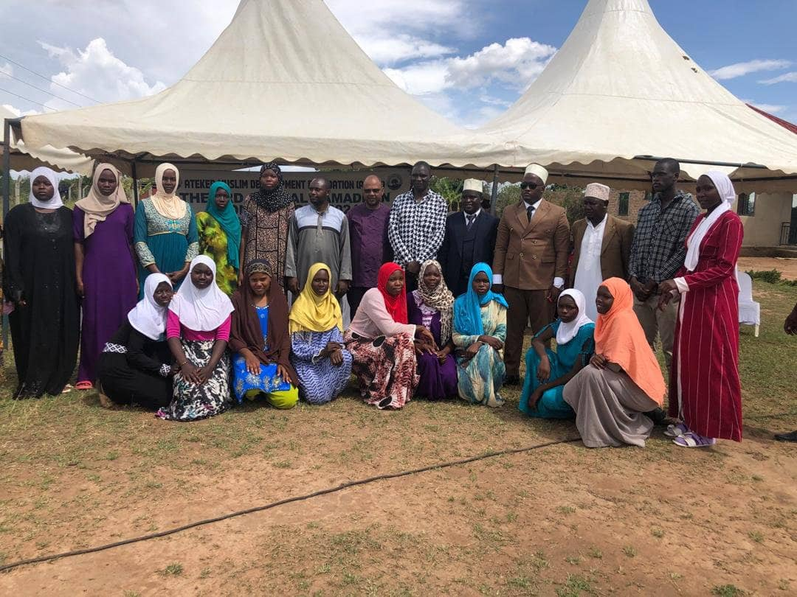
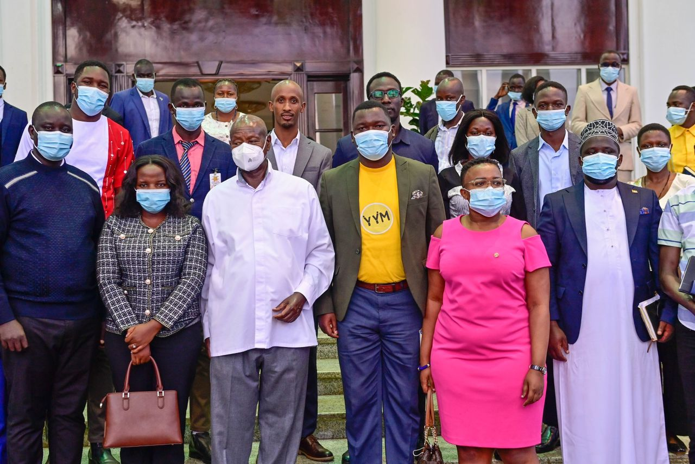
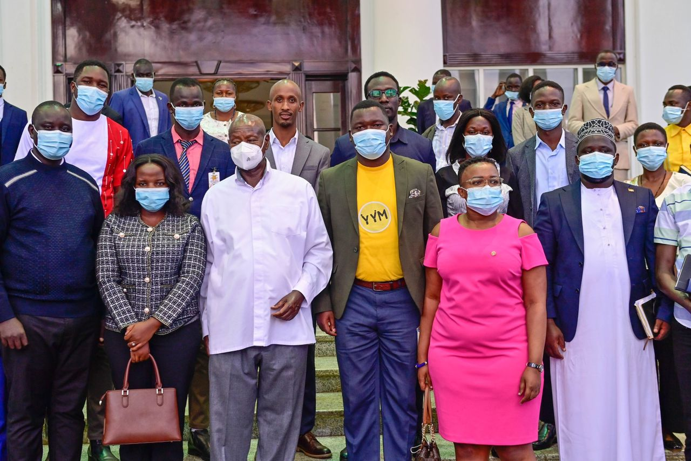
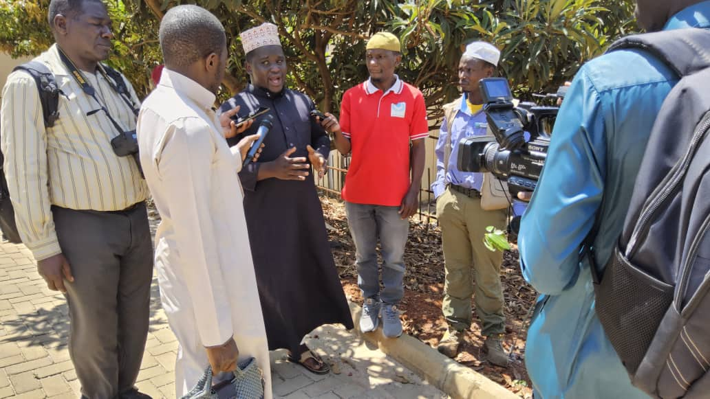
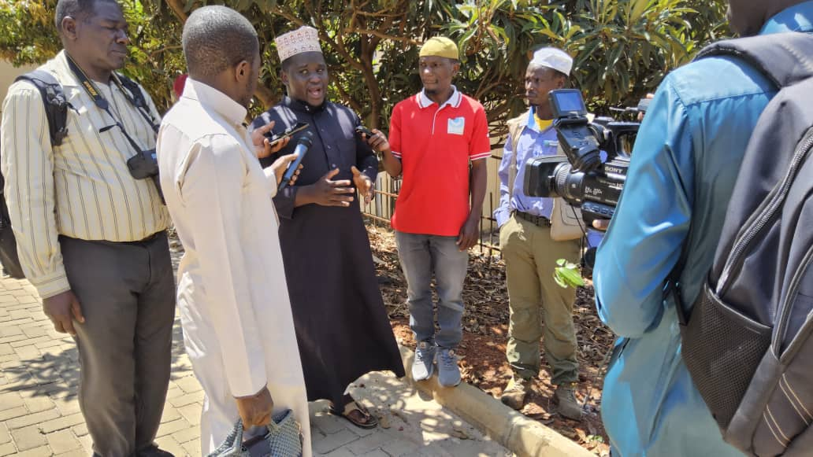

Gallery
Youth EmpowermentEducation & Scholarships Agriculture & LivelihoodsHumanitarian Response
Agriculture & LivelihoodsHumanitarian Response Construction & Infrastructure
Construction & Infrastructure Climate Action
Climate Action Entrepreneurship & Skills
Entrepreneurship & Skills Community Outreach
Community Outreach Volunteer ActivitiesTraining & WorkshopsField Visits
Volunteer ActivitiesTraining & WorkshopsField Visits Events & Campaigns
Events & Campaigns